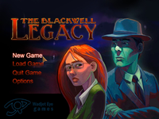

Adventure Game Studio
Dieser Artikel wurde für die folgenden Ubuntu-Versionen getestet:
Ubuntu 16.04 Xenial Xerus
Ubuntu 14.04 Trusty Tahr
Zum Verständnis dieses Artikels sind folgende Seiten hilfreich:
Beim Adventure Game Studio  (AGS) handelt es sich um eine quelloffene Spiele-Engine für Adventures. Die Entwicklungsumgebung steht für Linux nicht zur Verfügung. Jedoch können Spiele, die mit dieser Umgebung erstellt worden sind, gespielt werden.
(AGS) handelt es sich um eine quelloffene Spiele-Engine für Adventures. Die Entwicklungsumgebung steht für Linux nicht zur Verfügung. Jedoch können Spiele, die mit dieser Umgebung erstellt worden sind, gespielt werden.
Auf der Projektseite ist eine umfangreiche Spieleliste zu finden.
|  | ||
| The Journey Down | Remake von King’s Quest | The Blackwell Legacy |
Vorbereitung¶
Die folgenden Pakete sind erforderlich [1]:
git
debhelper
libaldmb1-dev (universe)
libdumb1-dev (universe)
libfreetype6-dev
libtheora-dev
libvorbis-dev
libogg-dev
pkg-config
libsm-dev
libice-dev
 mit apturl
mit apturl
Paketliste zum Kopieren:
sudo apt-get install git debhelper libaldmb1-dev libdumb1-dev libfreetype6-dev libtheora-dev libvorbis-dev libogg-dev pkg-config libsm-dev libice-dev
sudo aptitude install git debhelper libaldmb1-dev libdumb1-dev libfreetype6-dev libtheora-dev libvorbis-dev libogg-dev pkg-config libsm-dev libice-dev
Quellcode¶
Mittels Git wird der Quellcode von Adventure Game Studio heruntergeladen [2]:
git clone git://github.com/adventuregamestudio/ags.git
Dann wird in das Verzeichnis gewechselt und ein Debian-Paket gebaut:
cd ags fakeroot debian/rules binary
Das fertige Paket ags_VERSION_ARCHITEKTUR.deb ist anschliessend im darüberliegenden Verzeichnis zu finden und wird wie in [3] beschrieben installiert.
Spiele koennen fortan mittels
ags /Pfad/zum/Spiel/Titel.exe
gestartet [4] werden. Liegt in dem Spieleverzeichnis eine Konfigurationsdatei, so wird diese von AGS verwendet.
Hinweis:
Liegt das Spiel nur als Windows-Installer vor, so kann man die Spieldatei nach ~/.wine/drive_c extrahieren, indem man die Installation mit Hilfe von Wine ausführt. Alternativ kann innoextract verwendet werden.
Midi¶
Für die Midi-Unterstützung von alleg die Datei digimid.dat  (Richard Sanders's GUS patches) herunterladen und nach patches.dat umbenennen. Anschließend wird diese Datei in das Homeverzeichnis kopiert.
(Richard Sanders's GUS patches) herunterladen und nach patches.dat umbenennen. Anschließend wird diese Datei in das Homeverzeichnis kopiert.
| winsetup.exe |
acsetup.cfg¶
Über die Konfigurationsdatei können viele Einstellungen, wie z.B. die Auflösung und der Klang, angepasst werden. Hierzu öffnet man die Datei acsetup.cfg aus dem Installationsverzeichnis mit einem Editor [5] und bearbeitet diese. Sofern diese nicht vorhanden sein sollte, kann man diese erstellen.
Hinweis:
Ein manuelles Bearbeiten der Konfigurationsdatei wird nicht offiziell unterstützt. Es empfiehlt sich das Programm winsetup.exe aus dem jeweiligen Installationsverzeicnis heraus mit Wine [6] zu starten.
Parameter¶
Die Konfigurationsdatei ist in Abschnitte unterteilt. Unter [sound] werden Einstellungen am Sound vorgenommen. [misc] übergibt zusätzliche Parameter beim Spielaufruf, [language] ist für die Spielsprache zuständig und unter dem optionalen Abschnitt [disabled] können durch den Spieler gezielt Einstellungsmöglichkeiten genommen werden.
Anbei eine Tabelle mit den wichtigsten Parametern:
| acsetup.cfg | |
| Parameter | Beschreibung |
| [sound] | |
digiid=-1 | -1 (Grundeinstellung) |
midiid=-1 | -1 (Grundeinstellung) |
digiwin=1096302880 | 1096302880 (Grundeinstellung) |
midiwin=-1 | -1 (Grundeinstellung) |
digiindx=0 | 0 (Grundeinstellung) |
midiindx=0 | 0 (Grundeinstellung) |
digiwinindx=0 | 0 (Standardgerät DirectSound), 1 (Standardgerät WaveOut), 2 (Keine digitale Soundausgabe) und 3 (DirectSound - Hardwaremixer). |
midiwinindx=0 | 0 (MCI Music Device), 1 (Deaktiviert die Wiedergabe von MIDI und Sounds), 2 (Win32 MIDI Mapper) |
usespeech=0 | 0 um speech.vox nicht zu verwenden. Ansonsten den Wert auf 1 setzen. |
| [misc] | |
gamecolordepth=32 | Farbtiefe - mögliche Werte 8, 16 und 32 Bit. |
defaultres=2 | Mögliche Werte: 1 (320x200), 2 (320x240), 3 (640x400), 4 (640x480), 5 (800x600) und 6 (1024x768). |
screenres=0 | 0 (niedrige Auflösung 320x200, 320x240 oder 400x300) und 1 (hohe Auflösung von 640x400, 640x480 oder 800x600) - Werte sind abhängig vom Spiel. |
letterbox=1 | 1 (320x240 oder 640x480) - 0(andere Auflösung). |
defaultgfxdriver=D3D9 | Verwendeter Standard Treiber DX5 (DirectDraw 5 (2D) oder D3D9 Direct3D 9 (3D)). |
gfxdriver=D3D9 | Grafiktreiber (DX5 (DirectDraw 5 (2D) oder D3D9 (Direct3D 9 (3D)) |
titletext=ubuntuusers.de | Angezeigter Alternativtext. |
cachemax=102400 | Maximal verwendeter Arbeitsspeicher - hier 102400 KB. |
sideborders=0 | Seitenränder aktiviert = 0 / deaktiviert = 1 (z.B. bei der Verwendung des Breitbildformates) |
windowed=0 | 0 für Vollbild und 1 für den Fenstermodus. |
forceletterbox=0 | 1 - Letterbox erzwingen. 0 für die Standardeinstellung (320x240 oder 640x480). |
datadir=foo | Ordner in dem die Spiel-Dateien liegen festlegen. |
datafile=bar | Zu startende Datei festlegen. |
antialias=1 | 0 - weich skalierte Sprites nicht verwenden - 1 für die Verwendung dieser. |
notruecolor=0 | 1 - 16-Bit anstelle von 32-Bit verwenden, 0 = Deaktiviert |
refresh=0 | 0 - Bildwiederholfrequenz von 85 Hz deaktiviert, 85 - 85 Hz Bildwiederholfrequenz für die Verwendung mit einem Röhrenmonitor verwenden.  Falsche Werte können den Monitor beschadigen!!! Falsche Werte können den Monitor beschadigen!!! |
gfxfilter=StdScale2 | Grafikfilter: None (Keiner), StdScale2 (2x nearest-neighbour filter), StdScale3 (3x nearest-neighbour filter), StdScale4 (4x nearest-neighbour filter), AAx2 (2x anti-aliasing filter), AAx3 (3x anti-aliasing filter), AAx4 (4x anti-aliasing filter), Hq2x (2x High Quality / 32-Bit Farbtiefe) und Hq3x (3x High Quality / 32-Bit Farbtiefe). |
| [language] | |
translation=English | Zu verwendende Übersetzung - hier den Namen der .TRA-Datei angeben (sofern verfügbar). |
| [disabled] | |
speechvox=1 | Sprachdatei ist deaktiviert (sofern verfügbar). |
Hq2x=1 | Der Grafikfilter Hq2x wird deaktiviert. |
16bit=1 | Das Abstufung auf 16-Bit wird deaktiviert. |
Spiele¶
Spiele liegen als ausführbare Dateien vor. Um an den Inhalt zu gelangen kann man versuchen den Weg über innoextract, p7zip oder Wine zu gehen.
Maniac Mansion Mania   |
- Erstellt mit Inyoka
-
 2004 – 2017 ubuntuusers.de • Einige Rechte vorbehalten
2004 – 2017 ubuntuusers.de • Einige Rechte vorbehalten
Lizenz • Kontakt • Datenschutz • Impressum • Serverstatus -
Serverhousing gespendet von